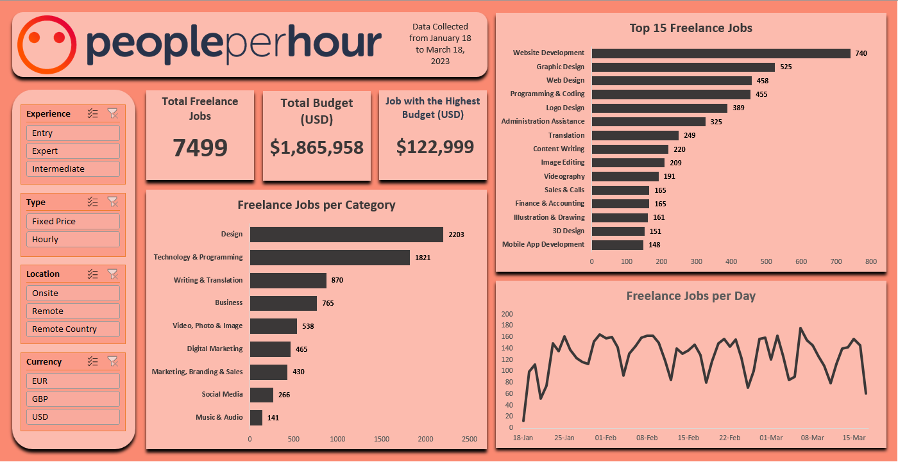

PeoplePerHour: Data Cleaning and Visualization
Tools used: Microsoft Excel

Peopleperhour is a website that functions as an online platform giving businesses access to freelance workers. To determine the trends in the freelance jobs posted in the platform, I decided to analyze the data. The dataset used is collected from the website from January 18, 2023 to March 18, 2023.
Please check the GitHub repository for the full data analysis process, which includes data cleaning, data exploration, and data visualization.